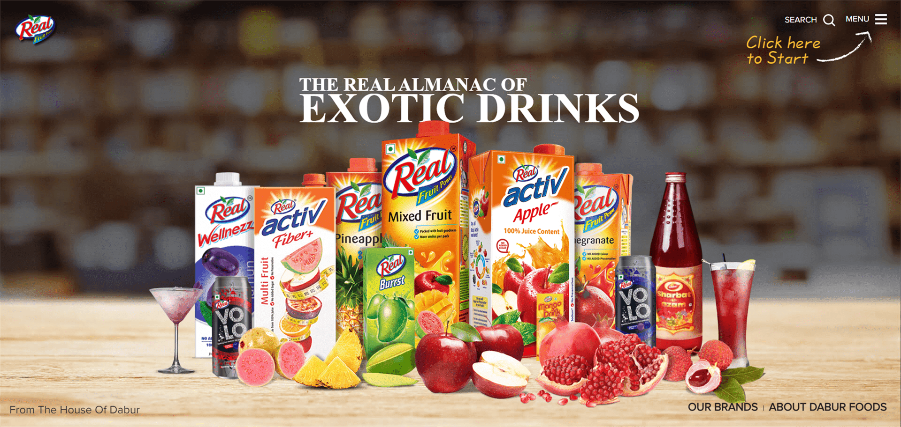
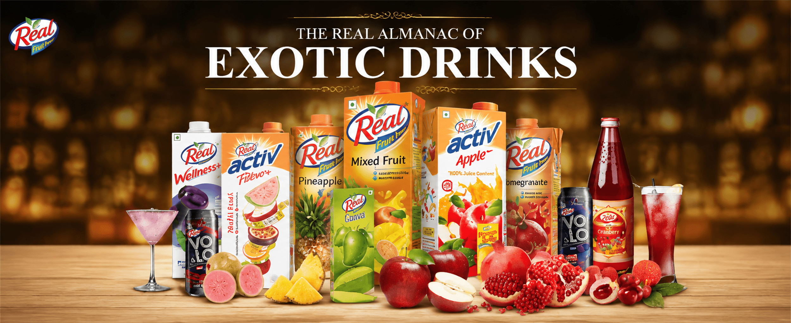
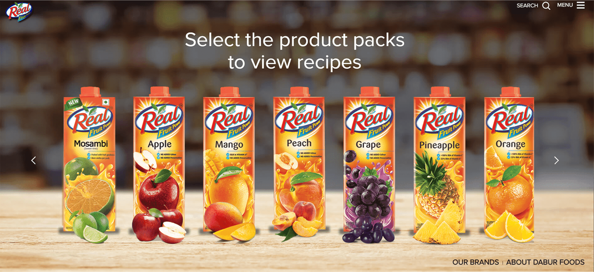
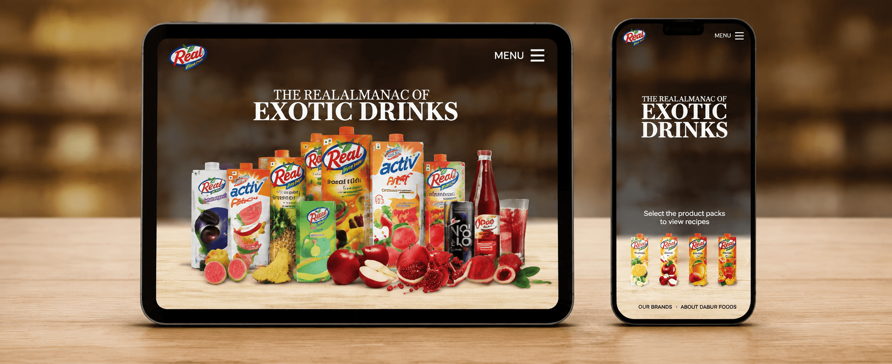

01 · Open
Lead with the full range.
A cinematic opening establishes breadth immediately while keeping every pack recognisable.

Réal Foods · Interactive Sales Application
An interactive sales experience that turns a broad product range into a clear, visual and presentation-ready journey.

Project overview
A broad portfolio is only powerful when the person presenting it can find the right story at the right moment.
We transformed Réal Foods’ product and recipe content into a responsive interactive presentation—clear enough for fast sales conversations and rich enough for deeper exploration.
The organising idea
The Almanac of Exotic Drinks connects product discovery to serving inspiration, helping the range feel coherent without flattening what makes every SKU distinct.
The application in use
Every screen helps the presenter move forward—from portfolio recognition to product selection and recipe inspiration.
A cinematic opening establishes breadth immediately while keeping every pack recognisable.

A direct, visual selector removes menu friction and lets the conversation begin with the product itself.

The responsive system keeps content legible and interactions natural across desktop, tablet and mobile.

The experience challenge
Multiple packs, formats and recipe possibilities needed a structure that remained effortless in live conversations.
The interface had to be quick, visual and dependable across screens without making presenters hunt for content.
Experience architecture
Lead with the complete range and strong pack visibility.
Organise products into an intuitive, touch-friendly choice.
Connect each pack with useful recipe and serving inspiration.
Keep the journey consistent on laptop, tablet and phone.
The outcome
The application brings portfolio, product choice and recipe storytelling into one coherent system—giving teams a faster route through the content and audiences a more memorable way into the brand.
Strategic categorisation makes a broad product range easier to understand.
Products become entry points to useful, appetite-led ideas.
A responsive interface supports presentations wherever the conversation happens.
One connected portfolio.Many ways to bring it to life.
Building a smarter sales experience?